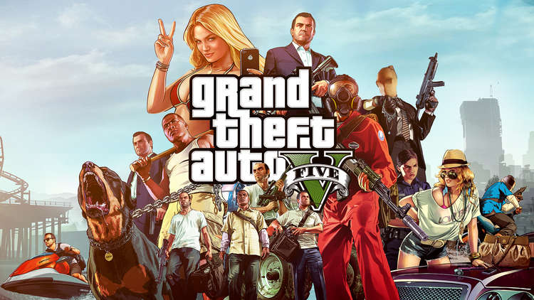
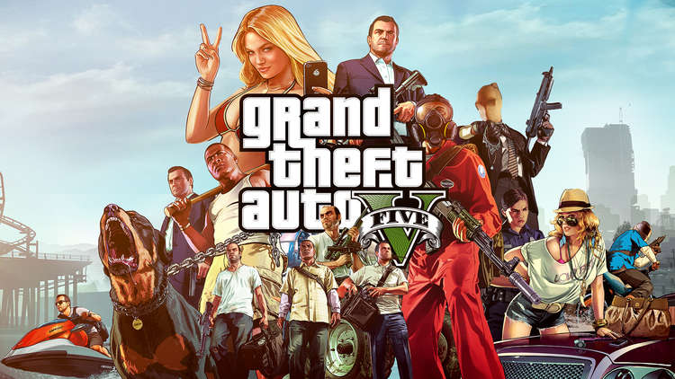

Sobre
Grand Theft Auto V é um jogo eletrônico de ação-aventura desenvolvido pela Rockstar North e publicado pela Rockstar Games. É o sétimo título principal da série Grand Theft Auto e foi lançado originalmente em 17 de setembro de 2013 para PlayStation 3 e Xbox 360, com remasterizações lançadas em 18 de novembro de 2014 para PlayStation 4 e Xbox One, e em 14 de abril de 2015 para Microsoft Windows. O jogo se passa no estado ficcional de San Andreas, com a história da campanha um jogador seguindo três criminosos e seus esforços para realizarem assaltos sob a pressão de uma agência governamental. O mundo aberto permite que os jogadores naveguem livremente pelas áreas rurais e urbanas de San Andreas.
A jogabilidade é mostrada em uma perspectiva de primeira ou terceira pessoa e o mundo pode ser atravessado a pé ou com veículos. Os jogadores controlam três protagonistas e podem alternar entre eles durante e fora das missões. A história é centrada em sequências de assaltos, com muitas missões envolvendo a jogabilidade de tiro e direção. Um sistema de "procurado" define a resposta e agressividade das forças da lei contra os crimes cometidos pelo jogador. O modo multijogador, Grand Theft Auto Online, permite que até trinta jogadores explorem o mundo e entrem em partidas competitivas ou cooperativas.
O desenvolvimento do jogo começou pouco depois do lançamento de Grand Theft Auto IV em 2008 e foi compartilhado por várias das subsidiárias da Rockstar ao redor do mundo. A equipe se influenciou por muitos de seus projetos anteriores como Red Dead Redemption e Max Payne 3, com o jogo tendo sido projetado ao redor de três protagonistas a fim de inovar a estrutura principal da série e impedir que ela estagnasse. Boa parte dos trabalhos de desenvolvimento centraram-se na criação do mundo aberto, com vários membros da equipe realizando pesquisas de campo pelo Sul da Califórnia. A trilha sonora contém músicas licenciadas e músicas originais compostas por um grupo de produtores que colaboraram no decorrer de vários anos.
Grand Theft Auto V recebeu uma enorme campanha de divulgação. Quebrando recordes de vendas na indústria, tornou-se o produto de entretenimento mais rapidamente vendido da história, arrecadando oitocentos milhões de dólares na estreia e alcançado um bilhão em apenas três dias. Foi aclamado pela crítica, que elogiou seu desenho de múltiplos protagonistas, o mundo aberto, apresentação e jogabilidade. O jogo rendeu controvérsias devido sua representação das mulheres e uma missão contendo tortura para extração de informações. Considerado por muitos críticos e jogadores como um dos títulos mais importantes da sétima geração de consoles e como um dos melhores jogos eletrônicos já criados, Grand Theft Auto V também venceu vários prêmios, incluindo o de Jogo do Ano, de diversas publicações. É o terceiro jogo mais vendido de todos os tempos, com mais de 120 milhões de cópias vendidas e o produto de entretenimento mais lucrativo da história, com cerca de seis bilhões de dólares em receita mundial.
Lojas para Compra


Imagens
 
